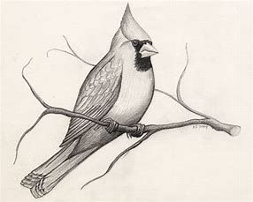

отрывки: “Before Christopher Columbus”
Цитаты этой Истории (будут)
к другим Цитатам
in the sky above
it's 1491
summer 1492
after three months at sea
it all began 500 years ago
to slow the passage of ships
they advance and destroy
Christopher Columbus will set foot
two vast continents
but there is another story
anchor off the Bahamas
Europe has found the Americas
Предыдущая история
Следующая история (строится)